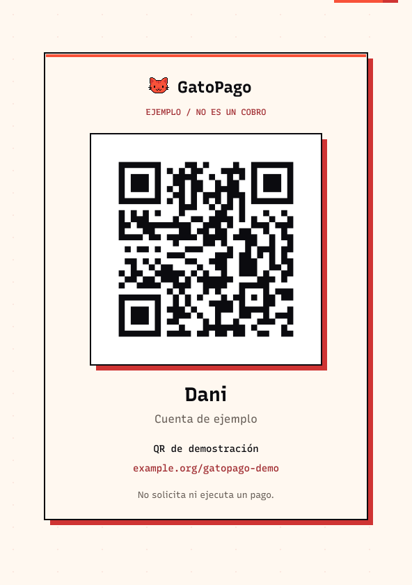
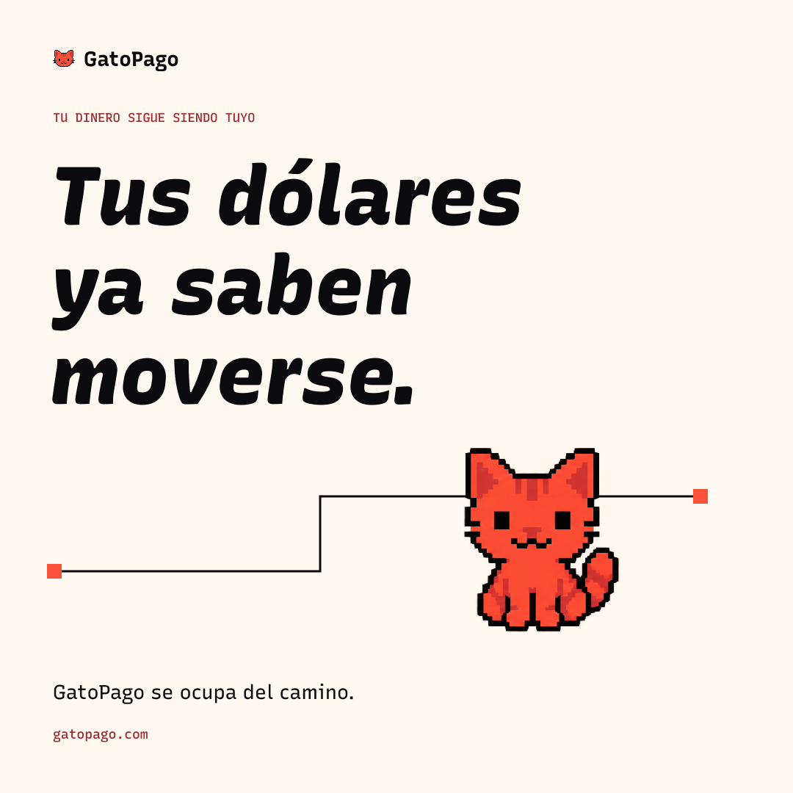
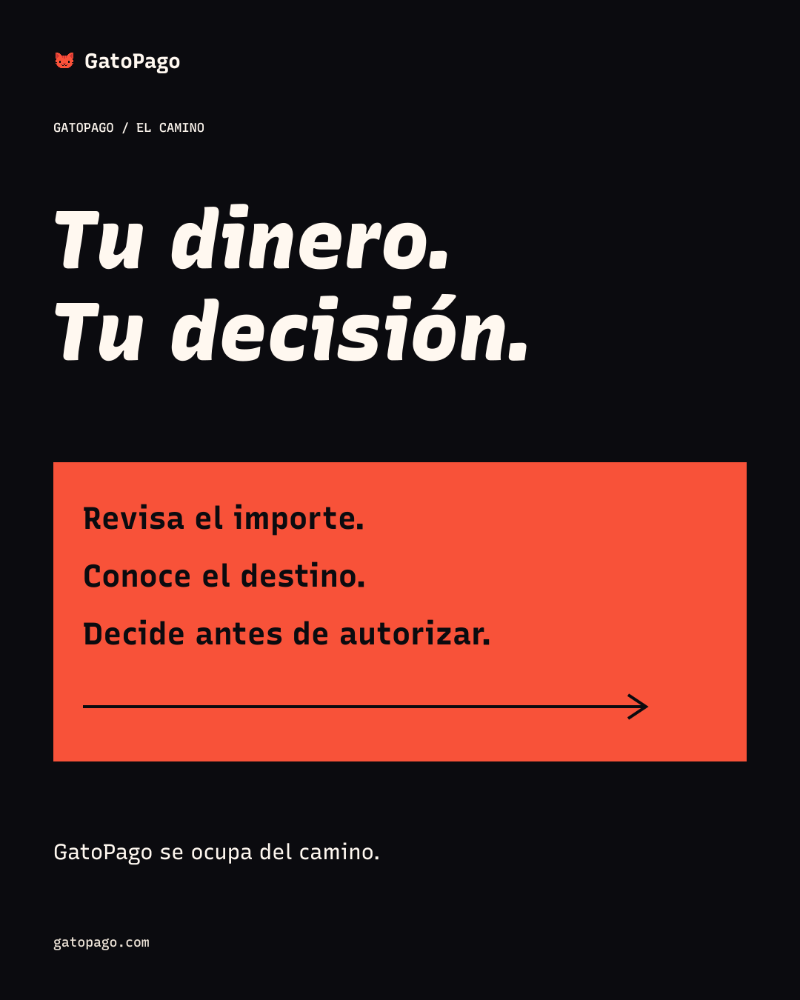
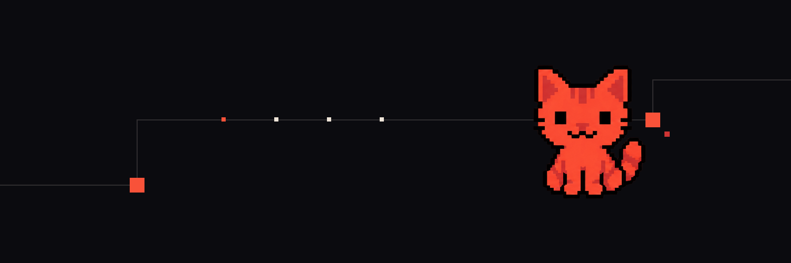

Correo transaccional
HTML con tablas, estilos inline y versión de texto. Sin envío.
Abrir ejemplo ↗ GatoPago LAB06 / Aplicaciones
GatoPago LAB06 / AplicacionesSiete piezas concretas, con fuentes y exportaciones. Los importes, estados y cuentas son ficticios. El QR abre una página de ejemplo; no solicita ni ejecuta un pago.
HTML con tablas, estilos inline y versión de texto. Sin envío.
Abrir ejemplo ↗Importe, activo, destinatario, costes, estado y referencia ficticios.
Abrir ejemplo ↗
A5, quiet zone de cuatro módulos, destino visible. No permite cobrar.
Abrir ejemplo ↗Tres estados, cierre y restauración de ejemplos.
Abrir ejemplo ↗
1080 × 1080 px · SVG editable y PNG.
Abrir ejemplo ↗
1080 × 1350 px · SVG editable y PNG.
Abrir ejemplo ↗
1500 × 500 px · SVG editable y PNG.
Abrir ejemplo ↗